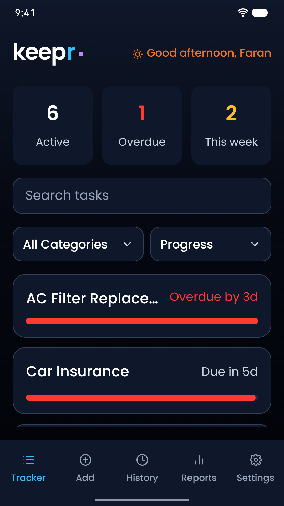
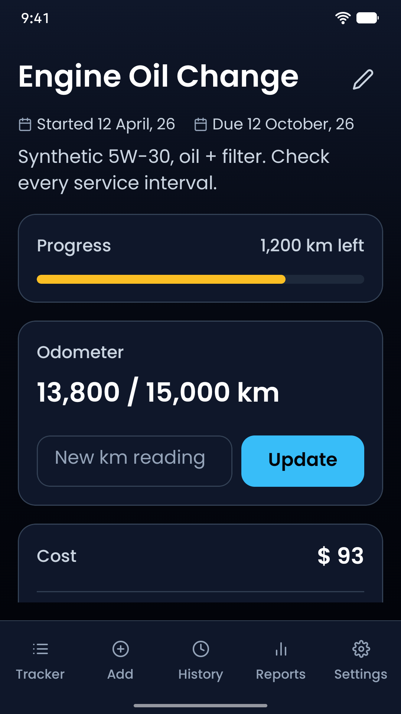
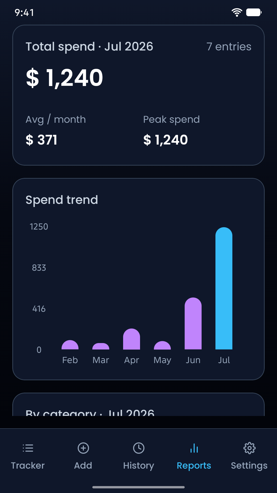
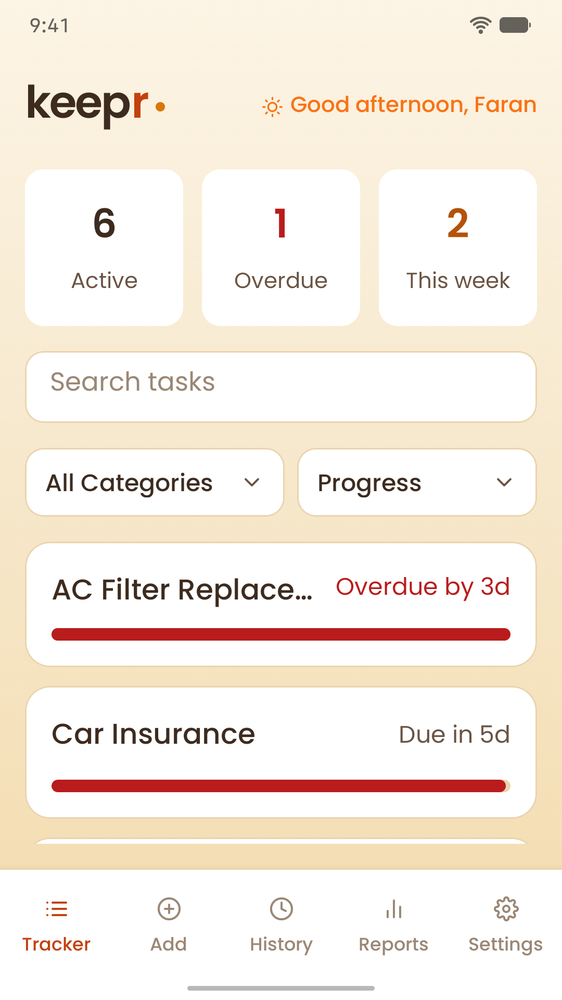
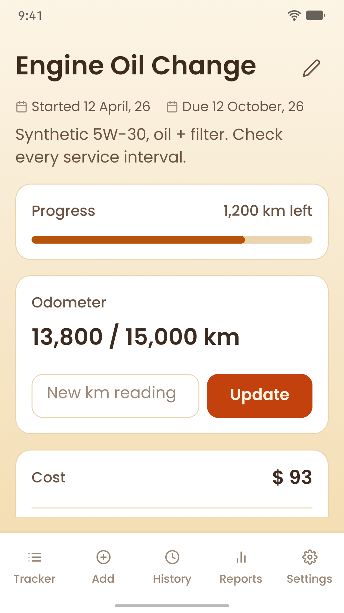
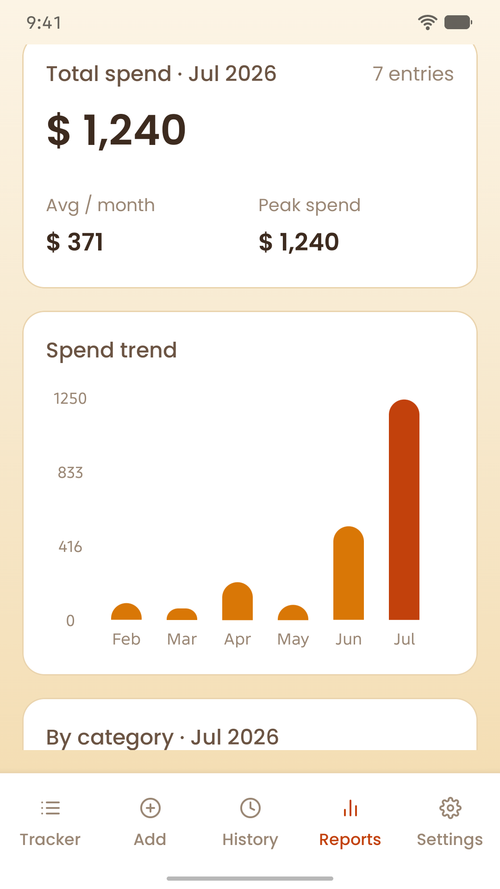
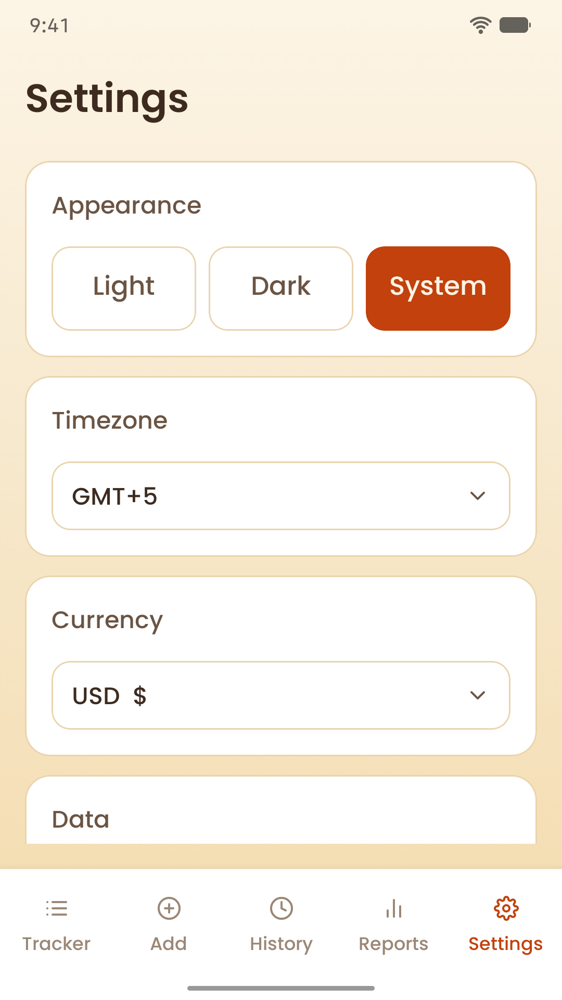
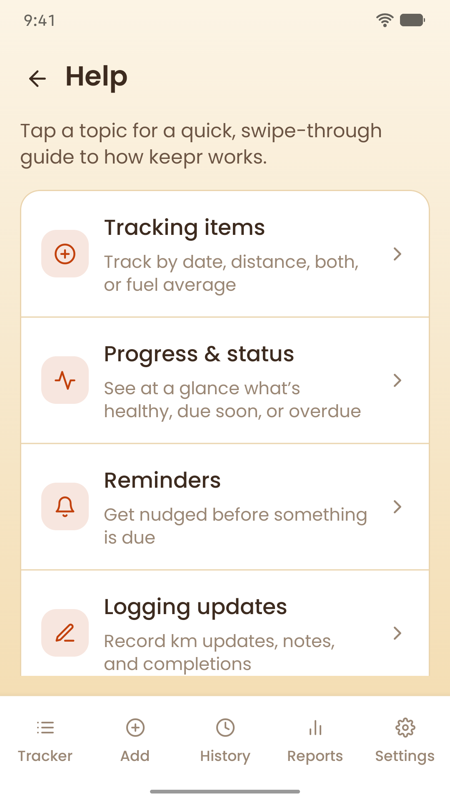

A look inside keepr.

Tracker — everything at a glance

Task detail — progress, odometer & costs

Reports — see where your money goes

Tracker in the light theme

Task detail in the light theme

Reports in the light theme

Settings — themes, currency & more

Built-in help — how keepr works